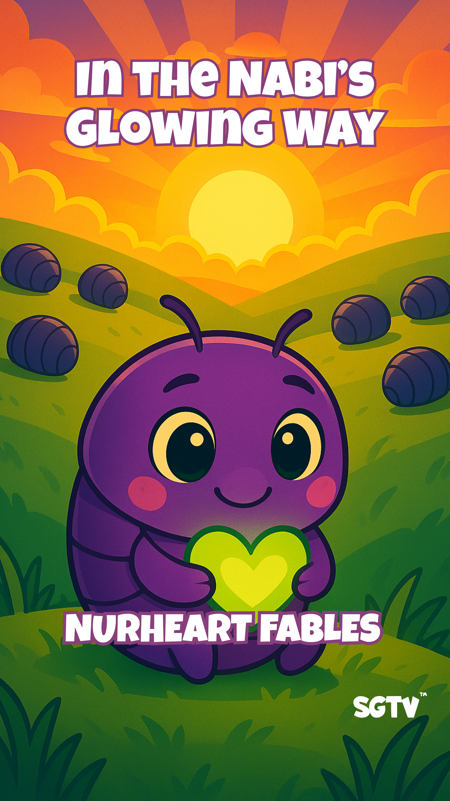
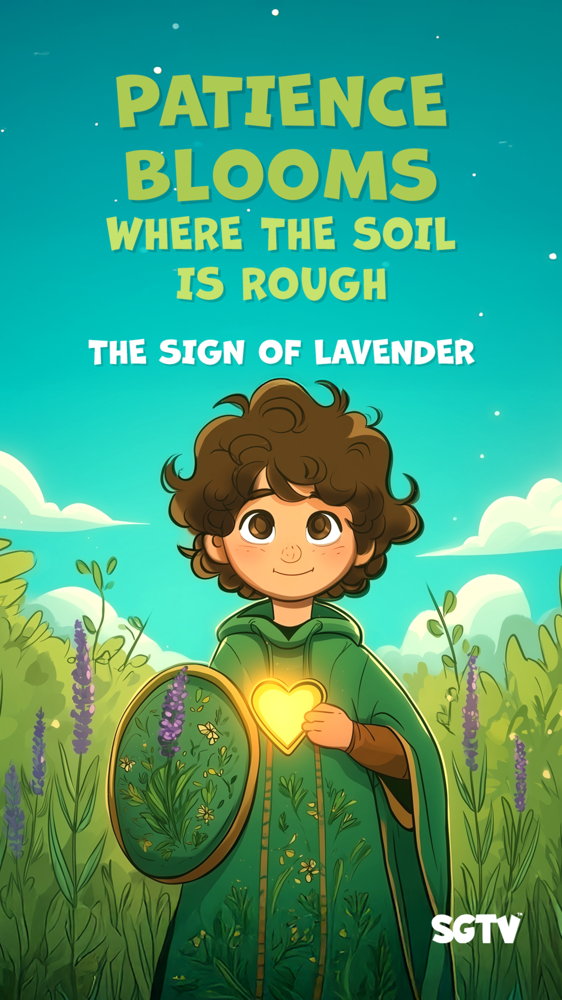

About Secret Garden TV for Kids
Secret Garden TV for Kids is an entrepreneurial venture aiming to reimagine Islamic education through cutting-edge, appealing, and creative media and entertainment. The website will serve as a central hub for the organization, showcasing its values, projects, and resources while providing an interactive and engaging experience for children and adults.
Teaching Adab in Everyday Moments—
Living Before Allah in a Distracting World

In the previous blog post, we spoke about raising children with purpose. Yet purpose must be protected and refined if it is to shape character. In Islam, that refinement is known as adab.
In a world that rewards speed, excitement, and attraction, adab invites us to slow down and remember something deeper: we are always standing before Allah. Even in the ordinary moments — when a child interrupts us mid-sentence, when siblings argue over a toy, when we respond while tired — we are living in His presence.
Adab Is More Than Manners
Many people translate adab as "good manners," but in the Islamic tradition it carries a richer meaning. Adab is not simply politeness or social etiquette. It is the awareness that Allah is our first and most important audience, and that every word, action, and reaction unfolds in His presence.
Allah tells us in the Qur'an, "I did not create jinn and humans except to worship Me" (51:56). Worship is not confined to prayer alone. It includes how we speak to our children when we are frustrated, how we respond when they make mistakes, how we carry ourselves in private, and how we behave online when no one else seems to be watching. The Prophet ﷺ expressed this beautifully when he said, "My Lord taught me adab, and He perfected it in me." This reminds us that adab is a spiritual formation shaped by divine guidance.

I did not create jinn and humans except to worship Me.Surah Adh-Dhariyat (51:56)
When a child understands that Allah sees them—not in a frightening way, but in a loving and constant way—their behavior begins to change from within. They choose their tone more carefully. They pause before reacting. They begin to ask themselves, even quietly, "Would this please Allah?" They become conscious that their actions matter because they are lived before Allah.
While the term etiquette comes from the French meaning prescribed behavior, its roots are from the Old French estiquette meaning a ticket or label. Presumably, the term evolved from cards telling people how to behave at court. The word Adab comes from the root أ د ب (ʾa-d-b) literally meaning to invite to a meal or hospitality and expanded in meaning to be defined as moral refinement, good manners, and correct conduct. However, adab is not only about outward etiquette, but also serves as a means of shaping hearts and character through intention, respect, and presence.
Adab starts at home—in the way we as parents speak, listen, and respond.
How Adab Shows Up at Home
Adab does not begin in grand gestures; it begins in daily family life. It appears when we greet each other with warmth and salaam, conscious that even this small exchange unfolds before Allah. It appears when we kneel down to listen fully to a child's story, even if we have heard a similar one before. It appears when we apologize sincerely after raising our voice and say, "That wasn't the best way to act before Allah."
Children learn adab less from instruction and more from observation. And they taste the sincerity and humbleness of those around them. They watch how we handle inconvenience. They notice how we speak about others. They feel the atmosphere of the home — whether it is rushed and reactive or calm and intentional. Over time, they internalize what they repeatedly witness.
When they see us pray without rushing, speak respectfully to strangers, or set aside distractions while they are talking, they begin to understand that presence is part of faith. In this way, adab is not lectured into the home—it is modeled into it.
When hearts remember Allah, actions become beautiful.
Nine Examples of Adab in Daily Interactions
Adab is not abstract. It lives in the small moments of the day, where our tone, attention, and reactions reveal what we truly remember.
Here are nine simple examples of how adab can shape daily life at home:
1. Listening Without Interrupting
When your child is speaking, give them your full attention. Put the phone down. Look at them directly. Even if the story is long, listening teaches them that their words matter. Teaching adab begins with showing that every voice deserves dignity, and that Allah hears how we respond to one another.
2. Lowering the Voice During Disagreement
Disagreements are natural in every home. Adab appears when we choose to lower our voice instead of raising it. A calm tone reminds our children that strength is not in volume, but in lived self-control before Allah.
3. Beginning and Ending Meals with Gratitude
Saying a short duʿā before eating and thanking Allah afterward transforms a routine meal into worship. It gently teaches children that even nourishment is a gift from Allah, and that gratitude is part of refined character. Gratitude softens hearts and brings calm into shared space.
4. Sharing Meals Together
Whenever possible, eating together strengthens both faith and family bonds. Sitting at one table—rather than eating separately or distracted—creates space for connection. These are the moments when children feel seen and heard, and when adab surely but quietly grows through shared presence.
5. Beginning Tasks with Bismillah
Whether starting homework, cooking dinner, or leaving the house, saying Bismillah turns an ordinary action into worship. It gently reminds children that nothing in life is separate from Allah's presence.
6. Apologizing Sincerely
When a parent says, "I'm sorry. I should have spoken more gently," something powerful happens. Children learn humility. They learn that dignity includes correction. They learn that everyone is accountable before Allah.
7. Guarding Words—Online and Offline
Adab extends beyond the home. Remind children that Allah sees what we type, what we watch, and what we share. Integrity means behaving the same way whether others are present or not.
8. Showing Joy and Energy Even When Tired
Parents are human, and exhaustion is real. Yet even small efforts to greet our children with warmth, smile when we walk into the room, or respond kindly despite fatigue demonstrate emotional discipline. When children see that we strive to bring good energy into our homes for Allah's sake, they learn that adab includes managing our moods with intention. It shows that love and intention should trump your mood.

9. Creating Sacred Pauses—Especially Before Daily Prayers
Before daily prayers, take a few quiet seconds together. A deep breath. A short dhikr. A reminder: "We are about to stand before Allah." These small pauses train the heart to slow down and remember.
If you are interested in receiving more information about future Muslim parenting workshops (both online and in-person), please sign up here:
Raise children who carry presence into every moment.
A Gift That Shapes the Heart
In a culture that prizes image, efficiency, and outward achievement at the expense of substance, nurturing adab helps our children grow into thoughtful and spiritually grounded human beings. It teaches them that every moment carries weight because every moment unfolds before Allah.
When children learn to live with Godly awareness, their actions become intentional, their character becomes steady, and even the smallest choices become sacred. Adab, in the end, is about being in the presence of Allah.
May Allah grant our families beautiful adab, inward and outward, and help us raise children who live before Him and for Him with sincerity and light. Ameen.